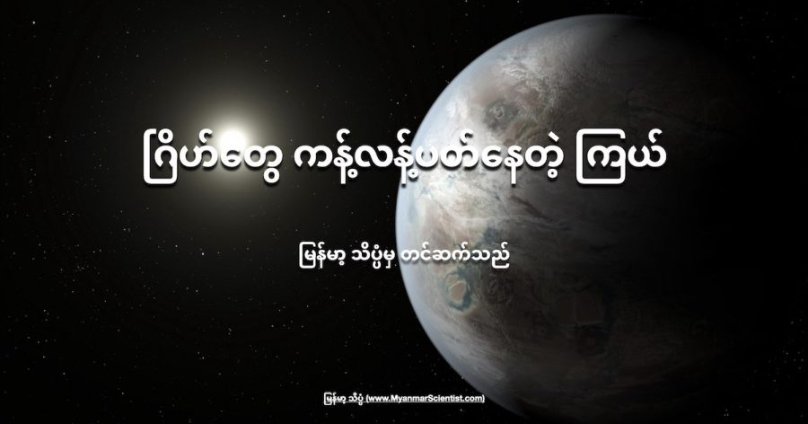

နေ အဖွဲ့အစည်းရဲ့ အပြင်ဖက်က ဂြိုဟ်တွေကို ရှာဖွေနေခဲ့တဲ့ နက္ခတ် ပညာရှင် တွေဟာ နေအဖွဲ့အစည်း ပြင်ပမှာ အခြားသော မြင်တွေ့နေကြ ကြယ် အဖွဲ့အစည်း တွေနဲ့ မတူပဲ တမူထူးခြား နေတဲ့ ကြယ်တစင်းကို ရှာဖွေ တွေ့ရှိခဲ့ ကြပါတယ်။
HD 3167 လို့ အမည်ပေး ထားတဲ့ ဒီ ကြယ်မှာ ပတ်နေတဲ့ ဂြိုဟ်ကြီး ၃ စင်း ရှိပါတယ်။ ဒီ ဂြိုဟ်ကြီး တွေထဲက အနီးဆုံး ဂြိုဟ်ဟာ ဒီ ကြယ်ကို တစ်ရက် ကို တစ်ကြိမ် ပတ်နေပါတယ်။ ကျန်တဲ့ ဂြိုဟ် နှစ်စင်း ကတော့ ၈ ရက် တစ်ကြိမ်နဲ့ ရက် ၃၀ ကို တကြိမ် မိခင်ကြယ်ကို ပတ်နေကြပါတယ်။
ဒီလို ပတ်နေတာက အထူးအဆန်း မဟုတ်ပါဘူး။ ထူးဆန်းတာက ဒီဂြိုဟ်တွေ မိခင်ကြယ်ကို ပတ်နေတဲ့ ပတ်လမ်းတွေ ပဲ ဖြစ်ပါတယ်။
ဂြိုဟ်တွေ မိခင်ကြယ်ကို ပတ်တဲ့ လမ်းကြောင်းနဲ့ ပါတ်သက်ပြီး နမူနာ အဖြစ် ကျွန်တော်တို့ရဲ့ နေ အဖွဲ့အစည်းကိုပဲ ကြည့်လိုက် ကြရအောင်ပါ။
နေ အဖွဲ့အစည်းမှာ ရှိတဲ့ ဂြိုဟ်ကြီး ၈ လုံး စလုံးဟာ နေကို ပြင်ညီ တစ်ခုထဲ ကနေ ပတ်နေကြတာ ဖြစ်ပါတယ်။ အကွာအဝေးသာ အနည်းအများ ကွားသွားပေမယ့် အားလုံးကတော့ ရေပြင်ညီ တစ်ခုထဲ ကနေ ပတ်နေကြတာ ဖြစ်ပါတယ်။ ဒီ ဂြိုဟ်တွေ ပတ်နေတဲ့ လမ်းကို Ecliptic လို့ ခေါ်ပါတယ်။
ဒါပေမယ့် အခု ကြယ်ကို ပတ်နေကြတဲ့ ဂြိုဟ်တွေကတော့ ဒီလို မဟုတ်ပါဘူး။ ဒီ ကြယ်ကို ပတ်နေကြတဲ့ ဂြိုဟ် တွေဟာ မိခင်ကြယ်ရဲ့ အီကွေတာ ကနေ ပတ်နေတာ မဟုတ်ပဲ တောင် နဲ့ မြောက် ဝင်ရိုးစွန်း တွေကို ဖြတ်ပြီး ပတ်နေတာ ဖြစ်ပါတယ်။ တနည်းအားဖြင့် မိခင်ကြယ်ကို အီကွေတာ အတိုင်း ပြင်ညီ ပတ်နေတာ မဟုတ်ပဲ ဒေါင်လိုက် ပတ်နေတာပါ။
“ကြယ် အဖွဲ့အစည်း တွေဟာ မကြာခန ဆိုသလို ဆူပါကမ္ဘာ (Super earth, ကမ္ဘာထက် ကြီးပြီး ကျောက်သားနဲ့ ဖွဲ့စည်းထားတဲ့ ဂြိုဟ်) တွေနဲ့ မီနီ နက်ပ်ကျွန်း (Mini Neptune, ကမ္ဘာထက် ကြီးပြီး ဓါတ်ငွေ့ နဲ့ ဖွဲ့စည်းထားတဲ့ ဂြိုဟ်) တွေနဲ့ဖွဲ့စည်းထားတာကို တွေ့ကြရ ပါတယ်။ ဒီလို ဂြိုဟ်ကြီး တွေ ရှိနေတာကြောင့် ဒီ ဂြိုဟ်တွေရဲ့ ဂြိုဟ်ပတ်လမ်းကို တိုင်းတာ တွက်ချက် ရတာ ပိုပြီး ခက်ခဲ လာစေပါတယ်။” လို့ ဒီ ဂြုဟ်ပတ်လမ်း တွေကို တွေ့ရှိခဲ့တဲ့ နက္ခတ် ပညာရှင် တွေက ပြောပါတယ်။
အခု ဂြိုဟ်ပတ် လမ်းတွေကို နေ အဖွဲ့အစည်း ပြင်ပက ဂြိုဟ်တွေ (exoplanet) တွေကို လေ့လာနေတဲ့ သုတေသီ တွေက တွေ့ရှိခဲ့ ကြတာ ဖြစ်ပါတယ်။ ဒီ သုတေသီ တွေဟာ ပြင်ပဂြိုဟ် တွေရဲ့ မိခင်ကြယ်နဲ့ ဂြိုဟ်နဲ့ ကြား က တည်ရှိတဲ့ အနေအထား တွေကို လေ့လာ ခဲ့ကြတာပါ။ ဒီ အချက်တွေကို သိရခြင်းအားဖြင့် ဂြိုဟ်တွေရဲ့ ဆင့်ကဲ ဖြစ်စဉ်နဲ့ ပါတ်သက်လို့ ပိုပြီး သဘောပေါက်လာ လိမ့်မယ်လို့ ဆိုပါတယ်။
အခု တွေ့ရှိချက်တွေကို နက္ခတ်ဗေဒ နှင့် နက္ခတ်ရူပဗေဒ ဂျာနယ် (Astronomy & Astrophysics) မှာ တင်ပြထားတာ ဖြစ်ပါတယ်။
အခု ကြယ် အဖွဲ့အစည်းကို ၂၀၁၆ မှာ စတင် တွေ့ရှိခဲ့ ကြတာ ဖြစ်ပါတယ်။ အဲ့သည် ကတဲက သိပ္ပံ ပညာရှင် တွေဟာ ဒီ ကြယ်ရဲ့ ဂြိုဟ်တွေ ပတ်နေတဲ့ လမ်းကြောင်းတွေ ထူးခြား နေတာကို သတိပြုမိ ခဲ့ကြပါတယ်။
အဲ့သည် အချိန်က ဒီ ကြယ်ကို ပတ်နေတဲ့ ဂြိုဟ် နှစ်စင်းကို တွေ့ရှိခဲ့ ကြတာပါ။ ဒီ ဂြိုဟ် နှစ်စင်းဟာ မိခင်ကြယ်ကို ပုံမှန် မဟုတ်တဲ့ တောင်-မြောက် ပတ်လမ်းနဲ့ ပတ်နေခဲ့ တာပါ။ အီကွေတာက ပတ်ရမယ့် အစား ကြယ်ရဲ့ အပေါ်ဖက် (မြောက်ဖက်) ကို တက်သွားလိုက်၊ အောက်ဖက် (တောင် ဖက်) ဆင်းလာလိုက်နဲ့ ပတ်နေ ခဲ့တာ ဖြစ်ပါတယ်။
ဒါပေမယ့် ဒီ့ထက်ပို ထူးဆန်းတာကို မကြာမီ မှာပဲ ပညာရှင်တွေ တွေ့ရှိ လာခဲ့ရပါတယ်။ အဲ့တာက တော့ တတိယ မြောက် ဂြိုဟ်ကြီး တစ်စင်းကို ရှာဖွေ တွေ့ရှိ ခဲ့ခြင်းပဲ ဖြစ်ပါတယ်။ ဒီဂြိုဟ်ကြီးဟာ မူလ တွေ့ထားတဲ့ ဂြိုဟ် နှစ်စင်းရဲ့ ပတ်လမ်းနဲ့ ကွဲပြားပြီး အီကွေတာ က ပတ်နေ တာ ထူးထူး ခြားခြား တွေ့ကြရ ပါတယ်။
ပုံမှန် ဆိုရင် ကြယ် အဖွဲ့အစည်း တွေက ဂြိုဟ်တွေဟာ နေ အဖွဲ့အစည်းက ဂြိုဟ်တွေ လိုပဲ ပြင်ညီ တစ်ခုထဲ ကနေ ပတ်နေကြတာပါ။ အခု ဒီ ကြယ်မှာ ကျတော့ ဂြိုဟ်တွေဟာ ပြင်ညီ တစ်ခုထဲ ကနေ ပတ်နေတာ မဟုတ် ပဲ တစ်ခုနဲ့ တစ်ခု ထောင့်မှန်နီးပါး ကျနေတဲ့ ပတ်လမ်း ပြင်ညီ နှစ်ခု ကနေ ပတ်နေတာကို ထူးထူး ဆန်းဆန်း တွေ့ခဲ့ကြရတာ ဖြစ်ပါတယ်။
ဒီ အချက်က သိပ္ပံ ပညာရှင် တွေကို အတော်လေး ဦးဏှောက် ခြောက် သွားစေ ခဲ့ပါတယ်။ ဘာလို့ဆို သိပ္ပံ ပညာရှင်တွေဟာ ဘာ့ကြောင့် ဒီလို ဂြိုဟ်ပတ်လမ်း ပြင်ညီ နှစ်ခု ဖြစ်နေရလဲ ဆိုတာ ရှင်းမပြ တတ်အောင် ဖြစ်နေခဲ့ ကြလို့ပါ။
ချီလီ နိုင်ငံမှာ တပ်ဆင်ထားတဲ့ “အလွန်ကြီးမားသော တယ်လီစကုပ် မှန်ပြောင်းကြီး” (Very Large Telescope in Chile) ကို အသုံးပြုပြီး ဒီ တတိယမြောက် ဂြိုဟ်ကို ရှာဖွေ တွေ့ရှိခဲ့ ကြတာ ဖြစ်ပါတယ်။ ဒီ တယ်လီစကုပ်ကြီး ကနေ တွေ့ရှိချက် အရ အခု နောက်ဆုံး တွေ့ရတဲ့ တတိယမြောက် ဂြိုဟ်ဟာ မိခင် ကြယ်ရဲ့ အီကွေတာကနေ ကြယ်ကို ပတ်နေပါတယ်။ ဒီပုံစံက ကျွန်တော်တို့ နေ အဖွဲ့အစည်းမှာ နေကို ဂြိုဟ်တွေ ပတ်နေတဲ့ ပုံစံ အတိုင်းပါပဲ။ ဒီတော့ တောင်မြောက် ဝင်ရိုးစွန်း တွေကို ပတ်နေတဲ့ အခြား ဂြိုဟ် နှစ်စင်းရဲ့ ပတ်လမ်းကြောင်း တွေနဲ့ဆို ထောင်လိုက် နီးပါး ကျနေတာပေါ့။
ဒီလို ဘာကြောင့် ဖြစ်လဲ ဆိုတာကိုတော့ ဘယ်သူမှ သေခြာ မပြောနိုင် ကြပါဘူး။ ဒီစာတမ်း တင်ပြတဲ့ ပညာရှင်တွေ မှန်းဆတာ ကတော့ ဒီ ကြယ်ကို ခပ်လှမ်းလှမ်းက ပတ်နေတဲ့ စတုတ္ထမြောက် ဂြိုဟ် ရှိလိမ့်မယ်လို့ ယူဆကြပါတယ်။ ဒီ စတုတ္ထမြောက် ဂြိုဟ်ဟာ ဂျူပီတာ (ကြာသပတေး) ဂြိုဟ်လောက် အရွယ် ရှိပြီး မိခင်ကြယ်ကို ရက် ၈၀ ကို တစ်ကြိမ် ပတ်နေတယ်လို့ ယူဆရ ပါတယ်။
ဒီ ဂြိုဟ်ကနေ သက်ရောက်တဲ့ ဆွဲငင်အားဟာ အပြင်ဖက် အကျဆုံး ဂြိုဟ် နှစ်စင်းကို ဝင်ရိုးစွန်း ပတ်လမ်းကို တွန်းပို့လိုက်ပြီးတော့ အတွင်းပိုင်း အကျဆုံး ဂြိုဟ် ကတော့ မိခင်ကြယ်ရဲ့ ပြင်းထန်တဲ့ ဆွဲအားကြောင့် ရုန်းမထွက်နိုင်ပဲ ဖြစ်နေတယ်လို့ ယူဆရ ပါတယ်။
အခု တွေ့တဲ့ ကြယ်အဖွဲ့အစည်း ဟာ ကမ္ဘာကနေဆို အလင်းနှစ် ၁၅၀ အကွာမှာ ရှိပါတယ်။ ဒီ ဂြိုဟ်တွေမှာ သက်ရှိတွေ ရှိနေမယ် လို့တော့ ပညာရှင် တွေက ယူဆ မထားကြ ပါဘူး။ ဒါပေမယ့် အခုလို ထူးခြားတဲ့ဂြိုဟ်ပတ်လမ်းတွေ နဲ့ ပါတ်သက်လို့ သဘောပေါက် နားလည်မှုဟာ နောက် တွေ့ရှိလာမယ့် ပြင်ပဂြိုဟ် (exoplanet) တွေကို ရှာဖွေရှာမှာ အထောက်အကူ အများကြီး ပြုလိမ့် မယ်လို့ အခု စာတမ်းကို တင်ပြတဲ့ သုတေသီ တွေက ပြောကြားပါတယ်။
Reference: Unique star system with ‘super-Earths’ surprises astronomers
ဂြိုဟ်တွေ ကန့်လန့်ပတ်နေတဲ့ကြယ်

November 13, 2021
Other Posts
- သင့်ကလေးရဲ့ ကိုယ့်ကိုယ်ကို တန်ဖိုးထားမှု (Self-esteem) ကို ဘယ်လိုမြှင့်တင် ပေးမလဲ
- ကမ္ဘာ့ဗဟိုအူတိုင် အပူချိန် ပိုမိုလျှင်မြန်စွာ အေးလာနေ
- Black Hole ရဲ့အမွှာ White Hole
- မာကျူရီဂြိုလ် စူးစမ်းရေး အာကာသယာဉ် ရောက်ရှိ
- ပုရွက်ဆိတ်ရဲ့ မျက်နှာ
- မေလဆန်းမှာ မြင်ရမယ့် အေကွာရစ် ကြယ်မိုး
- လွန်ခဲ့တဲ့ နှစ်သန်း ၃၀၀ တုန်းက ကမ္ဘာ့မြေပုံ
- လကမ္ဘာ သွားမည့် အာတီးမီးစ် ဒုံးပျံ အောင်မြင်စွာ လွှတ်တင်
- တစ်နှစ်ကို ၈ နာရီပဲ ကြာတဲ့ ဂြိုဟ်
- ဘာ့ကြောင့် T. rex တွေရဲ့ လက်တွေဟာ တိုနေရတာလဲ